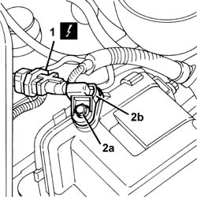
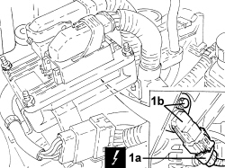

1056B51 cam angle sensor r + r
- Path
- Procedures > 10 ENGINE > 1056 PETROL INJECTION SYSTEM > 1056B MULTI-POINT INJECTION SYSTEM (MPI) > 1056B51 cam angle sensor r + r
- Kind
- repair procedure (removal / refitting; the operation number is the code)
- Applies to
- engines: 1.2 8v, 1.4 8v; all production periods
- Interactive page
- https://sloeber94.github.io/elrnDB-fDbl/en/#/2584243
Applies to: engines: 1.2 8v; all production periods
 Removing
Removing
 Refitting
RefittingOpen the bonnet.
Disconnect the negative battery terminal.
Description | Connector | |
|---|---|---|
- | Battery |
1. Disconnect the electrical connector for the sensor.
Description | Connector | |
|---|---|---|
1 | Timing sensor |
2. Undo the fixing bolt (2a) and remove the sensor (2b).

Applies to: engines: 1.2 8v; all production periods
Refitting
RemovingFit the sensor and tighten the fixing bolt.
Connect the electrical connector for the sending unit.
Description | Connector | |
|---|---|---|
- | Timing sensor |
Connect the negative battery terminal.
Description | Connector | |
|---|---|---|
- | Battery |
Close the bonnet.
Applies to: engines: 1.4 8v; all production periods
Removing
RefittingApplies to: engines: 1.4 8v; all production periods
- Disconnect the negative battery terminal.
1. Disconnect electrical connection (1a), unscrew the bolts and remove cam angle sensor (1b).
Description | Connector | |
|---|---|---|
1a | Timing sensor |

Applies to: engines: 1.4 8v; all production periods
Refitting
Removing- Refit the cam angle sensor in its seat, secure with the bolt and connect the electrical connection.
- Connect the negative battery terminal.